Brad's Recipe Blog
Jambalaya

Description
Jambalaya is a creole dish that has its was made in Louisiana. It has Spanish, French and African roots. It traditionally contains several meats, rice and vegetables such as peppers and onions. The level of spice can vary depending on who is making it and how much of a taste for spice the cook has. This dish is very flavorful and will not disappoint.
Ingredients
 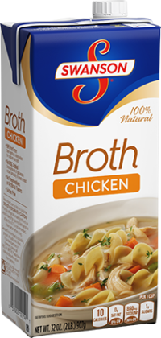
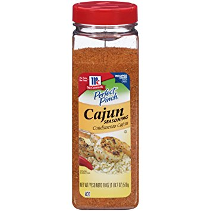
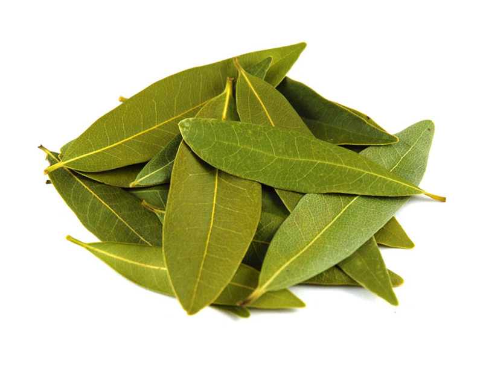
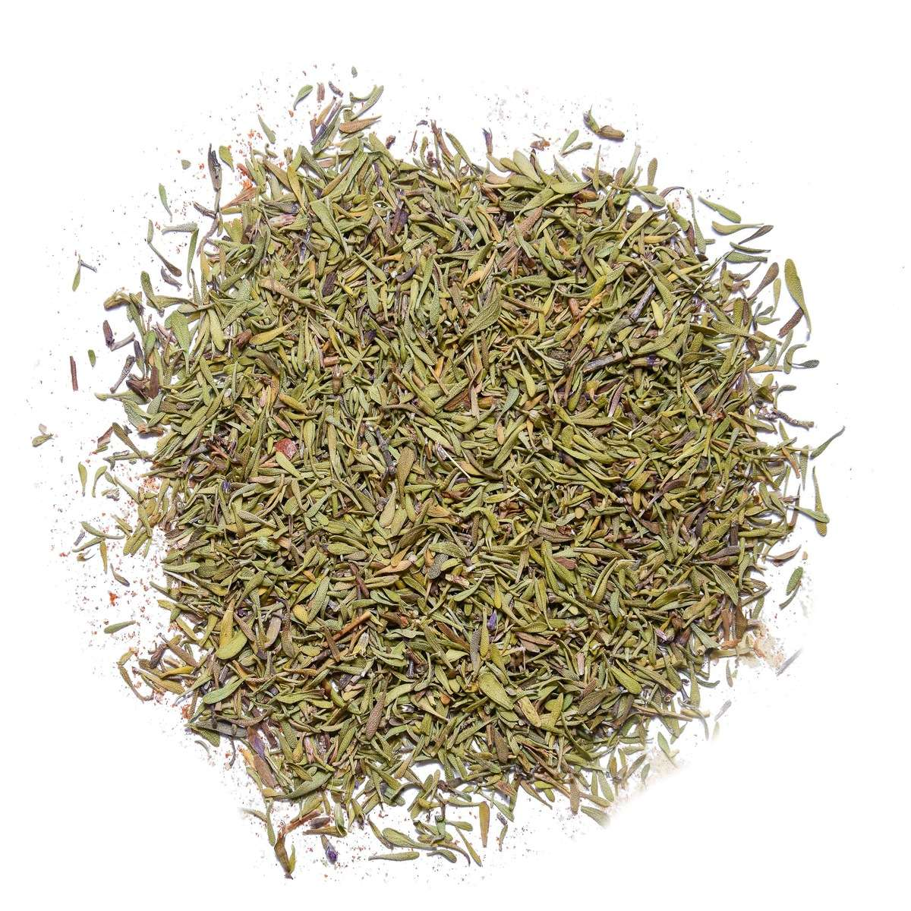
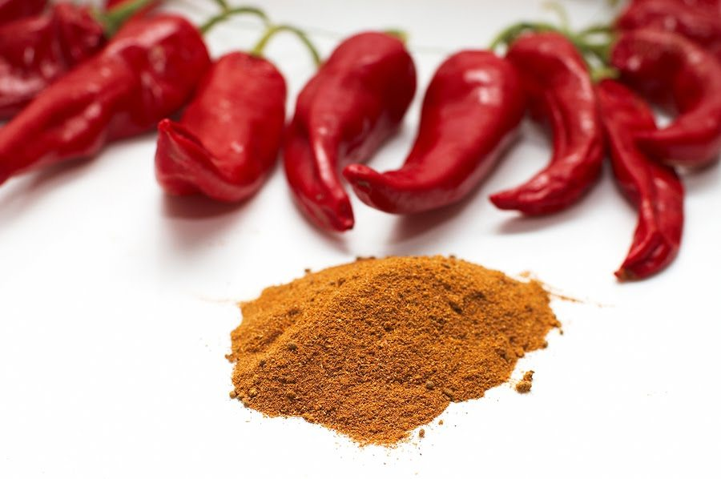
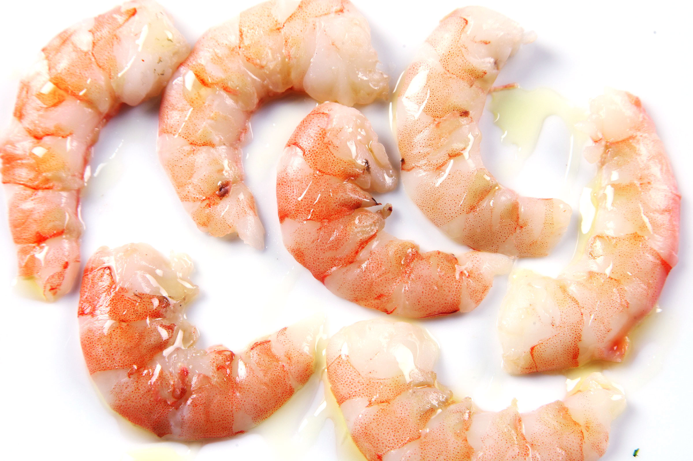
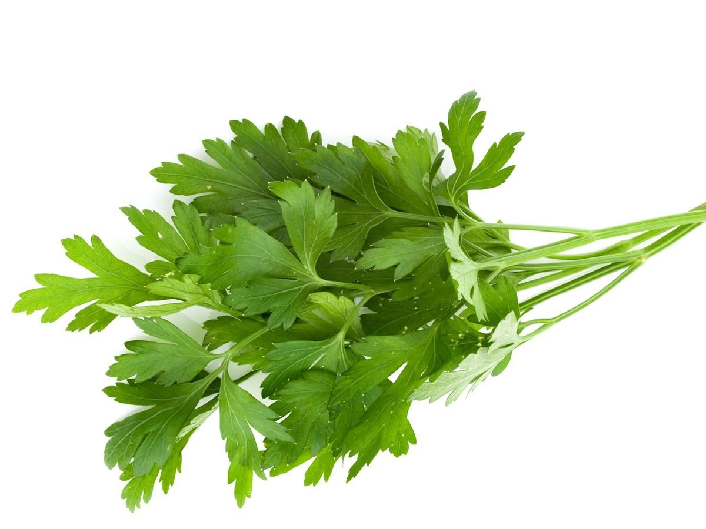
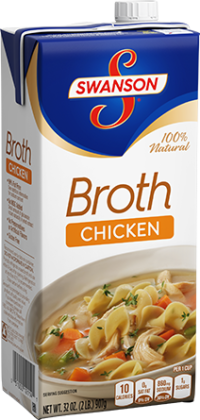
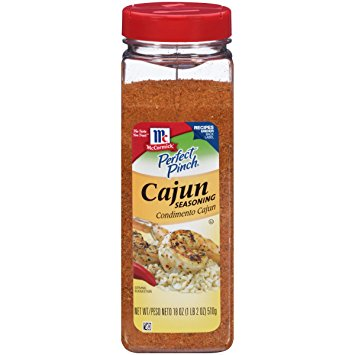
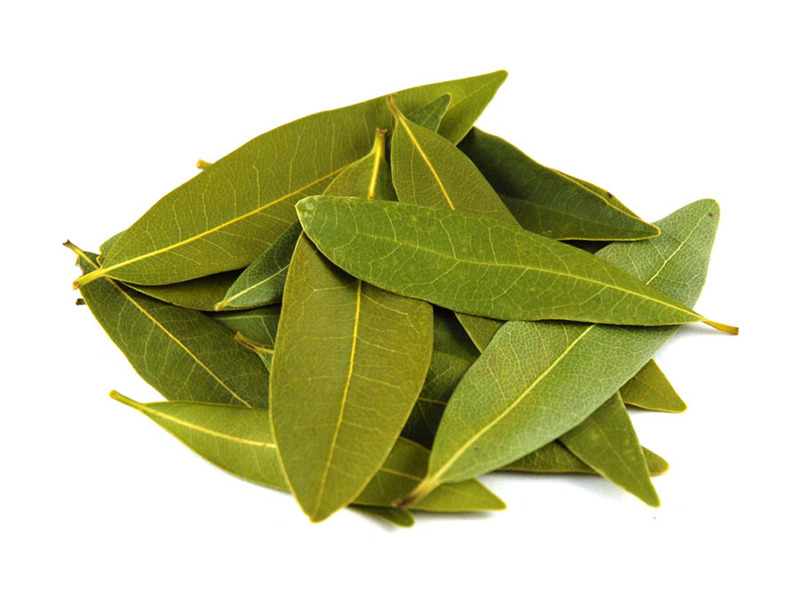
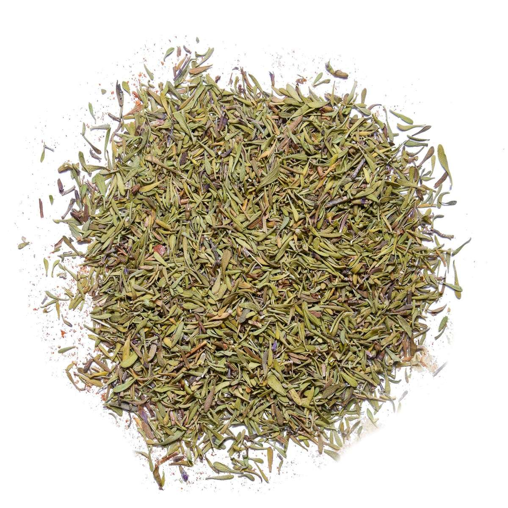
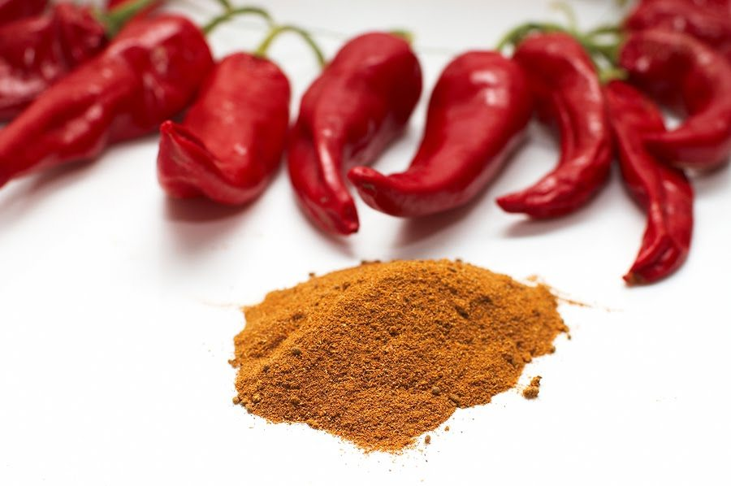
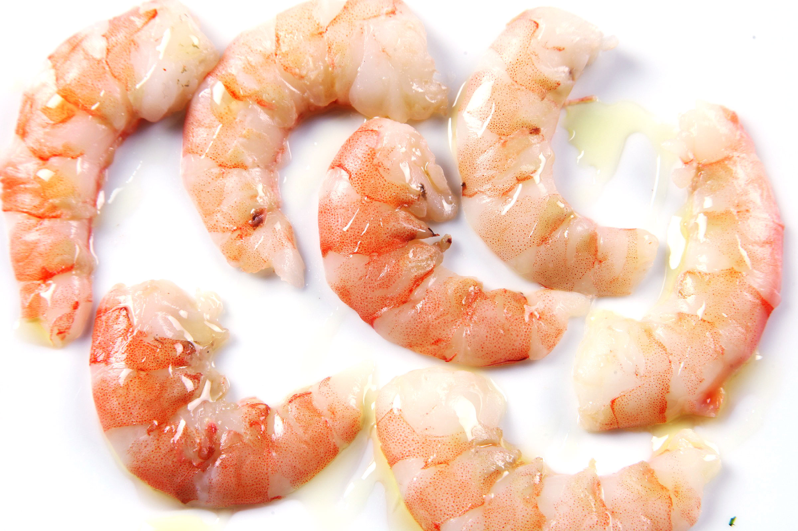
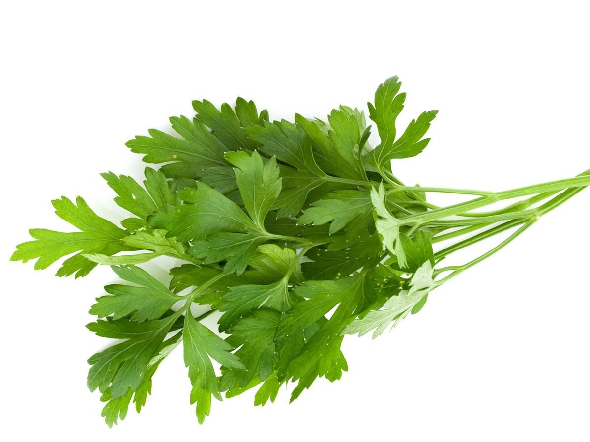
- 1 pound andouille sausage sliced
- 2 chopped green bell peppers
- 2 chopped stalks celery
- chopped scallions
- 28-ounce can diced tomatoes
- 1 cup of rice
- 1 and a half cups of chicken broth
- 2 teaspoons Cajun seasoning
- 2 bay leaves
- 1/2 teaspoon thyme
- cayenne pepper if you want heat
- 1 pound large shrimp
- Chopped fresh parsley
Directions
Add all of the ingredients into a large pot except for the shrimp and cook on the stovetop with a low flame/ heat. After 3 hours and 50 minutes add the shrimp to the pot. Let it cook for another 20 minutes. Remove the bay leaves from the pot. Serve the jambalaya and sprinkle parsley on top as desired.
Comment Section